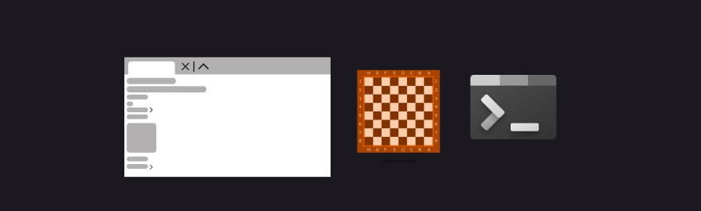

SpareChange
spare change text
Background
This app is the product of a group project for my Advanced Software Engineering class. I was in a group of four and this was a semester long. The goal of the app was to provide community members with a quick way to find weekend jobs, pet sitters, and other smaller one time jobs. We wanted to create an app that only had necessary information, was simple to use, and was geared towards the community.
Tools and Technology
Key Features
AI Enhancement
Users can choose to use the ai enhancement button to get a more in-depth job description when creating a post
Themes
There are three theme options to choose from, allowing you to personalize the app
Secure Location
UWhen users post a job the exact location is hidden from other users and instead a general range around the address is shown
Working Together
Because this was a group project there were some adjustments and learning curves. We had to decide on a design after each of us created our own wireframes. In the end I took on the role of designer and made the final high-fidelity mockup. At the beginning of this project we decided on roles for each of us. This app was going to be created in sprints in an agile environment, with sprints being about 4 weeks long. I ended up being the main design and frontend lead. The other members took on backend lead, team lead, and priority tester. We used a RACI matrix each sprint to keep track of who was doing what, helping with smooth and efficient communication.

Process
All members create wireframes and then combine those into a final design
Continue implementation, beging functional testing and set up GitHub actions.
Create a high fidelity prototype, create user scenarios, and plan out tasks
Conduct user testing sessions and implement an AI feature into the app.
Begin implementing the first phase feature and planning out pages.
Make any necessary changes and confirm testing is at least 80% coverage
Challenges
In terms of working together and the design phase there were not any issues. Once we began the implementation phase a few arose. I hadn't used Django in a couple years and was quite rusty getting back into it. We had some issues with setting up GitHub actions and getting the YAML file to work correctly as well. This was eventually fixed and we successfully utilized CI/CD in our app. We also incorporated three different design patterns: Decorator Pattern, Singelton Pattern, and Strategy Pattern.
Design Patterns
Decorator
This pattern was implemented so that admin users could delete any job posting, while normal users can only delete ones they posted.
Singelton
The job view included details to create a radius around the exact address, while the users view had the explicit longitude and latitude.
Strategy
There is a menu of options, an execution function that runs the chosen theme, and CSS variables that alter the UI based on what the user picks
Results
The app is not fully finsihed but it is functional and serves its purpose. Users can create an account, post a job, and look through jobs posted by other users. The AI feature is optional and works pretty well for description enhancement. Because it uses Ollama, users would need to have Ollama installed and runnining in order to use the enhancement feature. There are future plans to host the app, add a profile page, and let users go back and edit posts they have created.
Analysis from User Testing
After conducting several user testing sessions we found that the app was simple to navigate and didn't cause confusion. There were a couple instances where users could input invalid data when creating a job, but we corrected those and ensured only valid inputs were allowed when creating a posting. Some users expressed concerns regarding the lack of editing, and we took that into account for our future goals. The sessions themselves went smoothly and let us gather valuable insights into how a user might utilize the site.
Explore the Prototype
At the moment this app is not hosted anywhere but it can be pulled to your local machine and run. In the future I hope to get it hosted but for now I put several images from the various pages below.